The evaluation of multimodal generalist levels of existing popular MLLMs are shown below.
🔥[2024-11-15]: Paper, benchmark datasets, and the leaderboard are fully released!
🔥[2024-06-16]: We release our first version of benchmark datasets, and the leaderboard!
The Multimodal Language Language Model (MLLM) community is currently experiencing rapid growth, driven by the advanced capabilities of language-based LLMs.
Unlike their specialist predecessors, existing MLLMs are evolving towards a Multimodal Generalist paradigm.
Initially limited to understanding multiple modalities, these models have advanced to not only comprehend but also generate and edit across modalities.
Their capabilities have expanded from coarse-grained to fine-grained multimodal understanding and from supporting singular modalities to accommodating a wide array or even arbitrary modalities.
To assess the capabilities of various MLLMs, a diverse array of benchmark test sets has been proposed.
This leads to a critical inquiry: Can we simply assume that higher performance across diverse tasks and the support of more modalities indicate a stronger MLLM capability, bringing us closer to human-level AI?
We argue that the answer is not as straightforward.
In this project, we introduce a framework to delineate the capabilities and behaviors of current MLLM generalists.
This framework, named General-Level, establishes levels of MLLM performance and generality, offering a methodology to compare MLLMs and gauge the progress of existing systems towards more robust multimodal generalists and, ultimately, towards AGI.
Central to our framework is the use of Synergy as the evaluative criterion, categorizing capabilities based on whether MLLMs preserve synergy in and across comprehension and generation, as well as across multimodal interactions.
To evaluate the comprehensive abilities of various MLLMs as generalists, we propose a holistic benchmark, General-Bench, which encompasses a broader spectrum of tasks, modalities, formats, and capabilities.
The evaluation results involving over 20 state-of-the-art MLLMs uncover the capability rankings of generalists, highlighting the challenges in reaching genuine AI.
Figure 1: Illustrating that most existing MLLMs are based on language intelligence (a), whereas the ideal intelligence mode is maintaining synergy and generalization across all modalities and tasks (b).
Before determining the Levels of Multimodal Generalists, let us first clarify a few preliminaries about MLLMs.
An MLLM that only has multimodal comprehension capabilities represents the most basic and primitive level; we believe that the more powerful an MLLM is, the more it should support advanced functionalities, capable of both multimodal comprehension and generating content across various modalities.
This aligns with our understanding of the capabilities of MLLMs: the stronger the MLLM and the closer it is to AGI, the more task types it can support, the more modalities it can handle, and the stronger its task performance.
One could imagine using a simple LLM as a task dispatcher, combining all existing specialists to construct a multimodal agent or generalist capable of supporting various task types and modalities. However, we argue that merely unifying different tasks does not make a system a generalist. Therefore, a simple integration of specialists can, at best, only reach the capabilities of individual specialists. If so, what is the difference from using existing separate specialists? What is the point of integration?
Instead, we suggest that synergy is the most critical aspect when assessing whether a multimodal generalist is stronger! An MLLM should be able to achieve a synergistic effect where 1+1 > 2, such as understanding a single modality & task that can be transferred to understanding other tasks & modalities, similar to the ChatGPT series, which can achieve robust generalization abilities with minimal training examples. This aligns with our expectations of a generalist.
To this end, we focus on examining synergy capabilities: first, we evaluate the synergy among various multimodal tasks (comprehension or generation), then explore the synergistic effects between families of multimodal comprehension and generation tasks, and further investigate the presence of an 'everything synergy'.
Based on the above principles, let's assume we have a benchmark of various modalities and tasks. We can categorize tasks under these modalities into Comprehension tasks and Generation tasks as illustrated in the diagram, where each symbol represents a specific task (dataset). Notably, we also isolate NLP tasks.
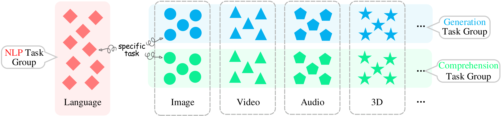Let’s denote the number of datasets or tasks within the Comprehension task group by \( M \); the number within the Generation task group by \( N \); and the number of NLP tasks by \( T \).
Now, we can provide the specific definition and calculation of each level:
| Level | Definition | Scoring | Example |
|---|---|---|---|
| Level-1: Specialist | Various current models, each fine-tuned on a specific task or dataset of specific modalities, are task-specific players (i.e., state-of-the-art (SoTA) specialists). This includes various AI processing tasks, such as recognition, classification, text generation, image generation, video segmentation, grounding, inpainting, and more. | For each task in the benchmark (\(i\)-th task), record the current SoTA specialist’s score: $$\sigma_i^{sota}$$ | SAM, Dino, DALLe, ChatGPT |
| ↓ Upgrading Conditions: LLM as intelligence medium (Comprehension or/and Generation) | |||
| Level-2: Generalist of Unified Comprehension and Generation | Models are task-unified players, e.g., MLLMs, capable of supporting different modalities and tasks. Such MLLMs can integrate various models through existing encoding and decoding technologies to achieve aggregation and unification of various modalities and tasks (such as comprehension and generation tasks). | The average score across all datasets is used as the model's score at this level. A model that can support a task, or scores non-zero on a corresponding dataset, is considered capable of supporting that task. The more tasks a model supports and the higher its scores, the higher its overall score: $$ S_{2} = \frac{1}{M+N} \sum_{i=1}^{M+N} \sigma_i $$ | GPT4v, Ilava, LVM |
| ↓ Upgrading Conditions: Realizing synergy: multi-task joint learning | |||
| Level-3: Generalist with Synergy in Comprehension and Generation | Models are task-unified players, and synergy is in Comprehension and/or Generation. MLLMs enhance several tasks' performance beyond corresponding SoTA scores through joint learning across multiple tasks due to the synergy effect. | Assign a mask weight of 0 or 1 to each task; assign mask=1 only if the corresponding score exceeds the SoTA specialist’s score, otherwise assign mask=0. Then, calculate the average score across all tasks. The more tasks a model surpasses the SoTA specialist, the higher its score at this level: $$ S_{3} = \frac{1}{M+N} \sum_{i=1}^{M+N} \begin{cases} \sigma_i, & \sigma_i \geq \sigma_i^{sota} \\\\ 0 \end{cases} $$ | MM-GPT, SALOMNN, Midjourney |
| ↓ Upgrading Conditions: Reconstruction loss for generation should be disentangled from compression learning loss | |||
| Level-4: Generalist with Synergy across Comprehension and Generation | Models are task-unified players, and synergy is across Comprehension and Generation. | Calculate the average scores exceeding SoTA specialists separately in the Comprehension and Generation groups, obtaining \( S_c \) and \( S_g \), and then compute their harmonic mean. The stronger a model is in Comprehension and Generation tasks, the higher its score at this level: $$ S_{4} = \frac{2 S_c S_g}{S_c + S_g}, \,\;\;\; \text{where} \\ S_g = \frac{1}{M} \sum_{i=1}^{M} \begin{cases} \sigma_i, & \sigma_i \geq \sigma_i^{sota} \\\\ 0 \end{cases}, \\ S_c = \frac{1}{N} \sum_{j=1}^{N} \begin{cases} \sigma_j, & \sigma_j \geq \sigma_i^{sota} \\\\ 0 \end{cases} $$ | Emu2, NExT-GPT, SEED |
| ↓ Upgrading Conditions: Acquiring the capable of abductive reasoning, being context consistent, everything synergy | |||
| Level-5: Generalist with Total Synergy across Comprehension, Generation, and NLP | Models are task-unified players, preserving the synergy effect across Comprehension, Generation, and NLP. In other words, the model not only achieves cross-modality synergy between Comprehension and Generation groups but also further realizes synergy with language. The NLP’s intelligence can enhance multimodal intelligence and vice versa; understanding multimodal information can also aid in understanding language. | First, calculate the model’s average score exceeding SoTA NLP specialists on NLP benchmark data, normalize it to a [0,1] weight, and multiply it by the score from level 4 to determine the level 5 score: $$ S_{5} = S_4 \times w_L, \,\;\;\; \text{where} \\ w_L = \frac{S_L}{S_{total}}, \\ S_L = \frac{1}{T} \sum_{k=1}^{T} \begin{cases} \sigma_k, & \sigma_k \geq \sigma_k^{sota} \\\\ 0 \end{cases} $$ | None, this is our goal! |
Existing benchmarks for evaluating MLLMs have the following issues:
Existing benchmarks rephrase and simplify all tasks into a fixed multiple-choice format. While this simplifies the evaluation of MLLMs, it limits assessments to the models' multimodal comprehension capabilities. As discussed above, a true multimodal generalist should not only support comprehension but also possess various other abilities, such as multimodal generation, editing, and more.
The majority of existing benchmarks focus primarily on the image modality, neglecting comprehensive modal coverage.
Existing benchmarks are limited to coarse-grained understanding of multimodal information and do not adequately assess the understanding of more fine-grained details
In response, this project proposes a new benchmark, named General-Bench.
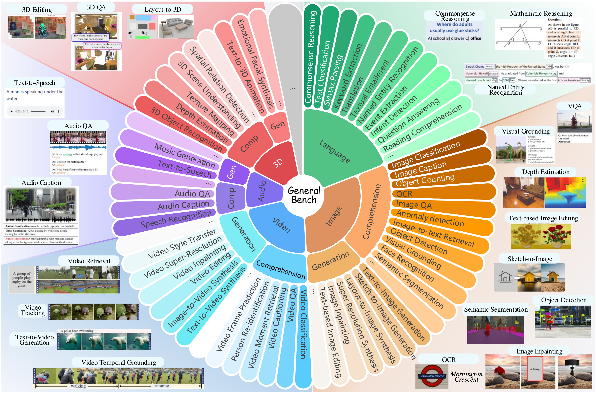General-Bench particularly places a strong emphasis on the diversity of its evaluation data, covering a wide range of fields and scenarios to assess different aspects of model capabilities. First, the dataset spans a variety of domains and disciplines, incorporating 14 major areas within both the physical sciences (e.g., Physics, Geometry, Biology) and the social sciences (e.g., Humanities, Linguistics, History). The evaluation of multimodal generalist skills and capabilities is categorized into universal modality-invariant abilities and modality-specific skills. The modality-invariant abilities comprehensively include 8 categories: content recognition, commonsense understanding, reasoning ability, causality discrimination, affective analysis, interactive capability, creativity and innovation, and problem-solving.
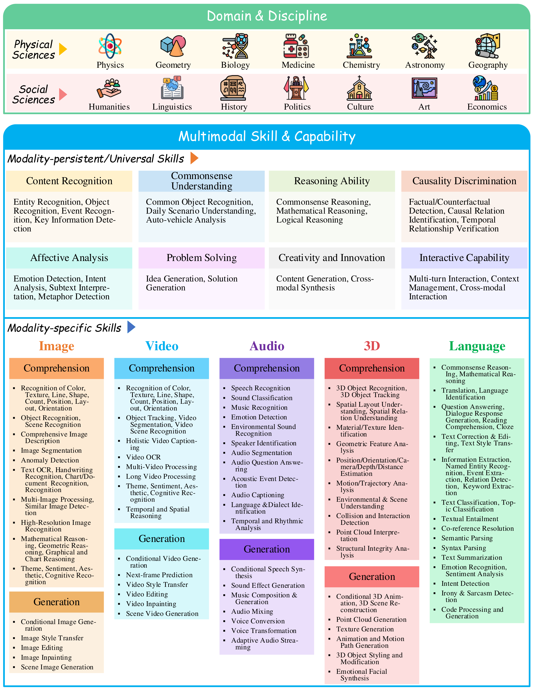Some typical examples of the tasks in our General-Bench are given here, which may help researchers to better understand our proposed benchmark.
1. Comprehension
| 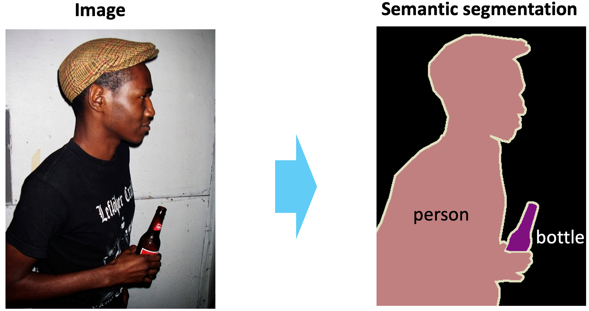 | 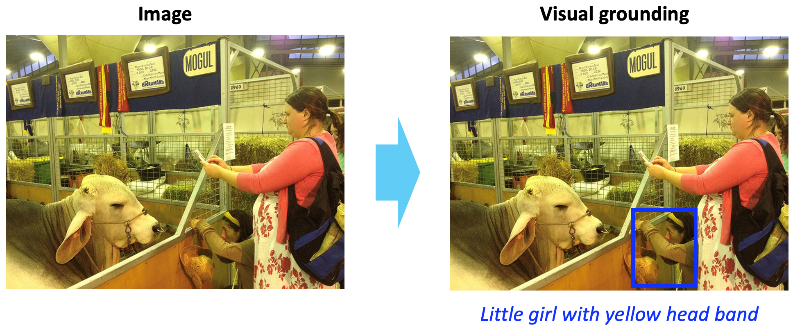 |
| Semantic Segmentation | Visual Grounding |
| 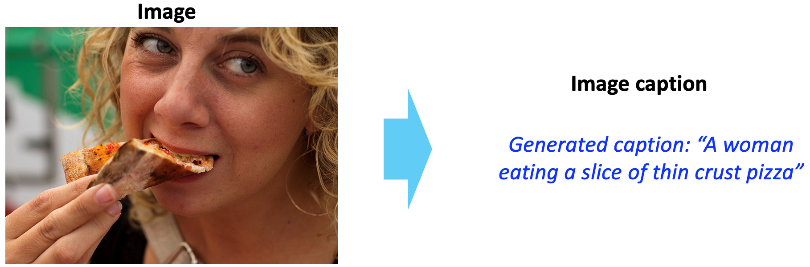 | 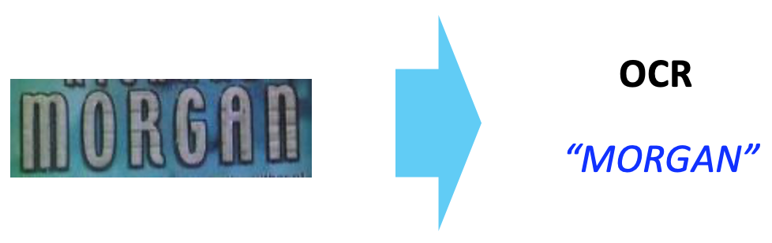 |
| Image Captioning | OCR |
2. Generation
| 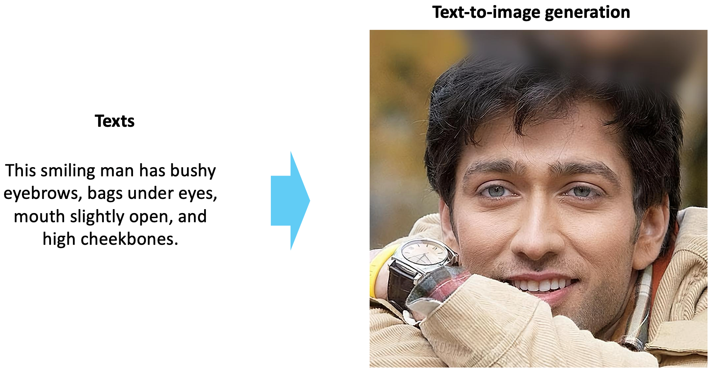 | 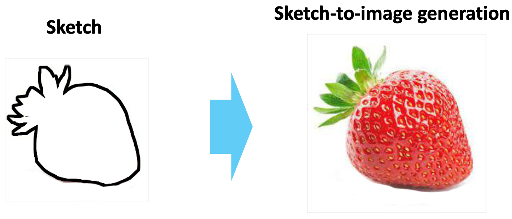 |
| Text-to-image Generation | Sketch-to-image Generation |
| 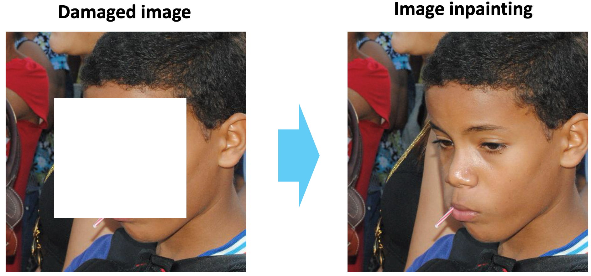 | 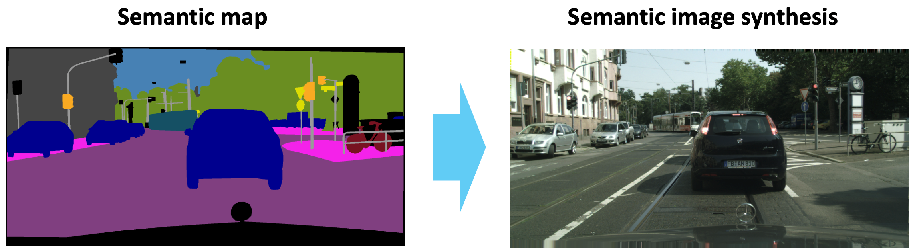 |
| Image Inpainting | Semantic Image Synthesis |
If you have a multimodal task and dataset and would like existing MLLMs to be evaluated on your benchmark, please consider contributing your dataset (testing set) to General-Bench!
The evaluation of multimodal generalist levels of existing popular MLLMs are shown below.
Below we list the original quantitative performance (zero-shot evaluation) of all MLLMs across all tasks.
| Task | Dataset | SoTA Specialist | Metrics | SoTA Score | GPT-4V | GPT-4o | LLaVA 1.5(7B) | miniGemnini(7B) | Qwen-VL-Plus | InternVL | MoE-LLaVA-QWen-1.8B-4e | Yi-VL(6B) | BLIP-2 | MiniGPT-4 | Emu2(37B) | SEED-LLaMA(14B-sft) | InternLM-XComposer2(7B) | LaVIT-V2(7B) | GPT4ROI | Ospery | NextChat | GlaMM | OMG-LLaVA-InternLM(20B) | AnyGPT | NExT-GPT | Vitron |
|---|---|---|---|---|---|---|---|---|---|---|---|---|---|---|---|---|---|---|---|---|---|---|---|---|---|---|
| Object Counting | FSC147 | counTR | MAE | 14.49 | 0 | 0 | 0 | 0 | 0 | 0 | 0 | 0 | 0 | 0 | 25.20 | 44.20 | 34.20 | 27.00 | 0 | 0 | 0 | 0 | 0 | 0 | 0 | 0 |
| CARPK | 6.39 | 0 | 0 | 0 | 0 | 0 | 0 | 0 | 0 | 0 | 0 | 58.10 | 61.42 | 49.89 | 56.20 | 0 | 0 | 0 | 0 | 0 | 0 | 0 | 0 | |||
| OCR | TextOCR | parseq | ANLS | 94.79 | 73.01 | 73.21 | 84.17 | 79.39 | 91.01 | 86.10 | 34.09 | 86.14 | 74.50 | 15.74 | 90.44 | 37.27 | 54.78 | 64.67 | 8.54 | 62.17 | 59.52 | 1.00 | 47.80 | 51.22 | 49.32 | 65.85 |
| Image Classification | CIFAR-100 | Astroformer | ACC | 86.30 | 57.00 | 80.67 | 52.33 | 38.67 | 49.66 | 76.00 | 29.87 | 64.67 | 17.30 | 26.66 | 40.00 | 21.00 | 54.66 | 33.67 | 12.33 | 12.67 | 10.00 | 43.60 | 6.00 | 37.62 | 46.33 | 57.80 |
| Text-to-Image Retrieval | Flickr30k | CLIP | Recall@1 | 81.33 | 0 | 0 | 0 | 0 | 0 | 0 | 0 | 0 | 0 | 0 | 0 | 0 | 0 | 0 | 0 | 0 | 0 | 0 | 0 | 0 | 0 | 0 |
| Image Caption | COCO-Caption | GRIT | ROUGH-L | 62.75 | 40.80 | 40.36 | 47.11 | 23.68 | 29.24 | 45.24 | 42.40 | 28.93 | 50.71 | 23.79 | 46.30 | 18.90 | 24.40 | 46.32 | 43.10 | 46.60 | 49.30 | 56.30 | 23.20 | 23.75 | 46.55 | 50.32 |
| Depth Estimation | NYU-v2 | TransDepth | ACC | 87.30 | 0 | 0 | 0 | 0 | 0 | 0 | 0 | 0 | 0 | 0 | 0 | 0 | 0 | 0 | 0 | 0 | 0 | 0 | 0 | 0 | 0 | 0 |
| Image Matting | AM-2k | GFM | MSE | 0.29 | 0 | 0 | 0 | 0 | 0 | 0 | 0 | 0 | 0 | 0 | 0 | 0 | 0 | 0 | 0 | 0 | 0 | 0 | 0 | 0 | 0 | 0 |
| KeyPoint Detection | OCHuman | BUCTD | AP | 43.9 | 0 | 0 | 0 | 0 | 0 | 0 | 0 | 0 | 0 | 0 | 0 | 0 | 0 | 0 | 0 | 0 | 0 | 0 | 0 | 0 | 0 | 0 |
| Object Detection | MSCOCO | DINO | 55.56 | 0 | 0 | 0 | 0 | 0 | 0 | 0 | 0 | 0 | 0 | 0 | 0 | 0 | 0 | 0 | 0 | 0 | 0 | 0 | 0 | 0 | 35.60 | |
| Visual Grounding | RefCOCO | polygon-former | AP@0.1 | 90.9 | 0 | 87.67 | 0 | 0 | 9.33 | 0 | 0 | 11.67 | 0 | 0 | 0 | 0 | 3.04 | 0 | 0 | 0 | 39.33 | 97.00 | 96.00 | 0 | 0 | 56.45 |
| RefCOCO+ | 85.97 | 0 | 18.00 | 0 | 0 | 7.00 | 0 | 0 | 7.67 | 0 | 0 | 0 | 0 | 2.49 | 0 | 0 | 0 | 31.33 | 63.00 | 89.00 | 0 | 0 | 67.41 | |||
| RefCOCOg | 84.76 | 0 | 14.70 | 0 | 0 | 7.00 | 0 | 0 | 8.67 | 0 | 0 | 0 | 0 | 2.99 | 0 | 0 | 0 | 31.00 | 55.70 | 86.70 | 0 | 0 | 63.85 | |||
| Semantic Segmentation | PASCAL VOC 2012 | SegCLIP | mIoU | 51.8 | 0 | 0 | 0 | 0 | 0 | 0 | 0 | 0 | 0 | 0 | 0 | 0 | 0 | 0 | 0 | 0 | 0 | 0 | 0 | 0 | 0 | 35.14 |
| Instance Segmentation | Cityspaces | OneFormer | AP | 45.68 | 0 | 0 | 0 | 0 | 0 | 0 | 0 | 0 | 0 | 0 | 0 | 0 | 0 | 0 | 0 | 0 | 0 | 0 | 0 | 0 | 0 | 23.45 |
| ADE20k | 35.95 | 0 | 0 | 0 | 0 | 0 | 0 | 0 | 0 | 0 | 0 | 0 | 0 | 0 | 0 | 0 | 0 | 0 | 0 | 0 | 0 | 0 | 23.45 | |||
| Panoptic Segmentation | Cityspaces | PQ | 67.33 | 0 | 0 | 0 | 0 | 0 | 0 | 0 | 0 | 0 | 0 | 0 | 0 | 0 | 0 | 0 | 0 | 0 | 0 | 0 | 0 | 0 | 17.89 | |
| ADE20k | 48.34 | 0 | 0 | 0 | 0 | 0 | 0 | 0 | 0 | 0 | 0 | 0 | 0 | 0 | 0 | 0 | 0 | 0 | 0 | 0 | 0 | 0 | 29.78 | |||
| Anomaly Detection | MVTecAD | DMAD | AUC | 97.5 | 0 | 0 | 0 | 0 | 0 | 0 | 0 | 0 | 0 | 0 | 0 | 0 | 0 | 0 | 0 | 0 | 0 | 0 | 0 | 0 | 0 | 0 |
| VQA | GQA | GIT | ACC | 44.67 | 25.67 | 25.00 | 70.00 | 69.67 | 68.33 | 72.67 | 67.00 | 55.33 | 22.30 | 33.66 | 74.00 | 59.11 | 56.15 | 47.90 | 0 | 64.66 | 31.67 | 0 | 57.70 | 43.95 | 56.58 | 68.40 |
| VQAv2 | 70.67 | 24.7 | 53.67 | 77.33 | 77.33 | 75.00 | 77.67 | 70.00 | 65.33 | 22.33 | 13.33 | 78.33 | 61.62 | 36.02 | 68.30 | 0 | 68.33 | 60.00 | 13.70 | 67.30 | 63.74 | 67.60 | 75.60 | |||
| VizWiz | 14.67 | 54.00 | 55.00 | 22.33 | 38.33 | 52.51 | 44.67 | 21.00 | 40.33 | 10.33 | 3.66 | 25.33 | 52.33 | 35.00 | 41.00 | 1.60 | 14.33 | 7.60 | 0 | 18.30 | 11.22 | 20.33 | 50.40 | |||
| OK-VQA | 36.67 | 33.67 | 47.67 | 54.67 | 56.00 | 45.82 | 59.00 | 48.00 | 46.00 | 16.33 | 0.90 | 55.33 | 48.00 | 54.00 | 55.90 | 0.30 | 37.66 | 29.00 | 14.30 | 45.70 | 28.03 | 40.30 | 52.03 | |||
| DocVQA | Donut | ANLS | 60.75 | 68.99 | 78.66 | 15.94 | 55.87 | 82.58 | 86.39 | 23.53 | 85.13 | 3.40 | 1.66 | 38.93 | 7.65 | 79.33 | 21.57 | 2.60 | 13.48 | 10.79 | 14.50 | 14.00 | 17.56 | 36.66 | 25.80 | |
| Text-to-Image | MultiModal CeleA-HQ | Lafite | FID | 149.861 | 0 | 0 | 0 | 131.60 | 0 | 0 | 0 | 0 | 0 | 0 | 112.33 | 0 | 0 | 0 | 0 | 0 | 0 | 0 | 0 | 141.64 | 123.30 | 130.60 |
| Imagenet | VQ-diffusion | 126.694 | 0 | 0 | 0 | 133.09 | 0 | 0 | 0 | 0 | 0 | 0 | 224.63 | 0 | 0 | 0 | 0 | 0 | 0 | 0 | 0 | 227.83 | 163.88 | 143.05 | ||
| MSCOCO | Lafite | 280.924 | 0 | 0 | 0 | 148.07 | 0 | 0 | 0 | 0 | 0 | 0 | 146.89 | 0 | 0 | 0 | 0 | 0 | 0 | 0 | 0 | 126.84 | 198.01 | 169.30 | ||
| CUB | 121.544 | 0 | 0 | 0 | 54.17 | 0 | 0 | 0 | 0 | 0 | 0 | 71.32 | 0 | 0 | 0 | 0 | 0 | 0 | 0 | 0 | 74.67 | 82.30 | 100.72 | |||
| Sketch-to-Image | Scribble | PITI | 312.12 | 0 | 0 | 0 | 350.76 | 0 | 0 | 0 | 0 | 0 | 0 | 406.01 | 0 | 0 | 0 | 0 | 0 | 0 | 0 | 0 | 357.91 | 505.66 | 324.25 | |
| SketchyCOCO | 274.39 | 0 | 0 | 0 | 232.41 | 0 | 0 | 0 | 0 | 0 | 0 | 171.87 | 0 | 0 | 0 | 0 | 0 | 0 | 0 | 0 | 171.91 | 326.40 | 208.35 | |||
| Layout-to-Image | COCOStuff | LayoutDiffusion | 141.34 | 0 | 0 | 0 | 187.08 | 0 | 0 | 0 | 0 | 0 | 0 | 269.25 | 0 | 0 | 0 | 0 | 0 | 0 | 0 | 0 | 141.35 | 350.30 | 231.17 | |
| Visual Genome | 131.79 | 0 | 0 | 0 | 0 | 0 | 0 | 0 | 0 | 0 | 0 | 381.31 | 0 | 0 | 0 | 0 | 0 | 0 | 0 | 0 | 171.70 | 410.10 | 269.02 | |||
| SuperResolution | Set14 | HAT | PSNR | 35.29 | 0 | 0 | 0 | 0 | 0 | 0 | 0 | 0 | 0 | 0 | 28.00 | 0 | 0 | 0 | 0 | 0 | 0 | 0 | 0 | 0 | 0 | 0 |
| BSD100 | 32.74 | 0 | 0 | 0 | 0 | 0 | 0 | 0 | 0 | 0 | 0 | 28.10 | 0 | 0 | 0 | 0 | 0 | 0 | 0 | 0 | 0 | 0 | 0 | |||
| Manga109 | 41.01 | 0 | 0 | 0 | 0 | 0 | 0 | 0 | 0 | 0 | 0 | 28.68 | 0 | 0 | 0 | 0 | 0 | 0 | 0 | 0 | 0 | 0 | 0 | |||
| Urban | 35.09 | 0 | 0 | 0 | 0 | 0 | 0 | 0 | 0 | 0 | 0 | 28.13 | 0 | 0 | 0 | 0 | 0 | 0 | 0 | 0 | 0 | 0 | 0 | |||
| Image Inpainting | Places2 | mat | FID | 40.38 | 0 | 0 | 0 | 0 | 0 | 0 | 0 | 0 | 0 | 0 | 111.67 | 0 | 0 | 0 | 0 | 0 | 0 | 0 | 0 | 93.12 | 153.06 | 123.56 |
| CelebA-HQ | 12.69 | 0 | 0 | 0 | 0 | 0 | 0 | 0 | 0 | 0 | 0 | 47.86 | 0 | 0 | 0 | 0 | 0 | 0 | 0 | 0 | 81.65 | 76.33 | 64.02 | |||
| FFHQ | 16.91 | 0 | 0 | 0 | 0 | 0 | 0 | 0 | 0 | 0 | 0 | 64.49 | 0 | 0 | 0 | 0 | 0 | 0 | 0 | 0 | 107.05 | 88.41 | 34.80 | |||
| Text-based Image Editing | PIE-Bench | Prompt-to-Prompt | LPIPS | 33.91 | 0 | 0 | 0 | 37.58 | 0 | 0 | 0 | 0 | 0 | 0 | 41.61 | 0 | 0 | 0 | 0 | 0 | 0 | 0 | 0 | 0 | 0 | 36.74 |
| VITON-HD | mgd | FID | 30.69 | 0 | 0 | 0 | 0 | 0 | 0 | 0 | 0 | 0 | 0 | 166.07 | 0 | 0 | 0 | 0 | 0 | 0 | 0 | 0 | 0 | 0 | 65.33 | |
| Semantic Image Synthesis | ADE20k | INADE | 48.28 | 0 | 0 | 0 | 0 | 0 | 0 | 0 | 0 | 0 | 0 | 312.10 | 217.36 | 0 | 0 | 0 | 0 | 0 | 0 | 0 | 0 | 0 | 186.07 | |
| Cityspaces | 87.16 | 0 | 0 | 0 | 0 | 0 | 0 | 0 | 0 | 0 | 0 | 226.01 | 181.96 | 0 | 0 | 0 | 0 | 0 | 0 | 0 | 0 | 0 | 175.33 | |||
| Low-light Image Enhancement | LOL | WaveNet | PSNR | 25.44 | 0 | 0 | 0 | 0 | 0 | 0 | 0 | 0 | 0 | 0 | 27.91 | 0 | 0 | 0 | 0 | 0 | 0 | 0 | 0 | 28.33 | 0 | 34.86 |
| Image Denoising | SIDD | HINet | 39.80 | 0 | 0 | 0 | 0 | 0 | 0 | 0 | 0 | 0 | 0 | 28.16 | 0 | 0 | 0 | 0 | 0 | 0 | 0 | 0 | 0 | 0 | 0 | |
| Image deblurring | GoPro | LAKDNet | 33.48 | 0 | 0 | 0 | 0 | 0 | 0 | 0 | 0 | 0 | 0 | 27.97 | 0 | 0 | 0 | 0 | 0 | 0 | 0 | 0 | 27.91 | 56.31 | 40.66 | |
| HIDE | 32.60 | 0 | 0 | 0 | 0 | 0 | 0 | 0 | 0 | 0 | 0 | 27.93 | 0 | 0 | 0 | 0 | 0 | 0 | 0 | 0 | 27.88 | 51.03 | 38.27 | |||
| Text Classification | 20 Newsgroups | Flan-T5-XL | F1 | 48.30 | ||||||||||||||||||||||
| AG News | 90.80 | |||||||||||||||||||||||||
| IMDB | 96.70 | |||||||||||||||||||||||||
| SST | 96.20 | |||||||||||||||||||||||||
| Yelp | 55.80 | |||||||||||||||||||||||||
| TREC | 93.60 | |||||||||||||||||||||||||
| DBpedia | 79.80 | |||||||||||||||||||||||||
| FakeNewsNet | 58.33 | |||||||||||||||||||||||||
| SNLI | 86.90 | |||||||||||||||||||||||||
| Quora | 83.10 | |||||||||||||||||||||||||
| Information Extraction | NER | Flan-T5-XL | F1 | 19.85 | ||||||||||||||||||||||
| CoNLL-2003 | 13.28 | |||||||||||||||||||||||||
| OntoNotes 5.0 | 10.24 | |||||||||||||||||||||||||
| semeval-2010-task-8 | 33.7 | |||||||||||||||||||||||||
| DocRed | 0.21 | |||||||||||||||||||||||||
| DialogRE | 10.93 | |||||||||||||||||||||||||
| ACE 2005 | 0.96 | |||||||||||||||||||||||||
| Semeval 14 | 43.47 | |||||||||||||||||||||||||
| CoNLL 2014 | 0 | |||||||||||||||||||||||||
| SNIPS | 94.14 | |||||||||||||||||||||||||
| UPB | 0 | |||||||||||||||||||||||||
| SQuAD 2.0 | 43.90 | |||||||||||||||||||||||||
| Text Generation | HotpotQA | Flan-T5-XL | F1 | 48.85 | ||||||||||||||||||||||
| CoQA | 55.10 | |||||||||||||||||||||||||
| NewsQA | 23.62 | |||||||||||||||||||||||||
| RACE | 85.60 | |||||||||||||||||||||||||
| ReCoRD | 55.89 | |||||||||||||||||||||||||
| MS MARCO | 35.49 | |||||||||||||||||||||||||
| MultiRC | 41.44 | |||||||||||||||||||||||||
| CNN-Daily Mail | 24.47 |
Most task evaluation scores, despite utilizing different metrics, fall within the 0-100 range (such as F1, Accuracy, etc.); however, some task metrics yield scores outside the 1-100 range. Thus, we design the following score mapping to standardize various scores into the 1-100 range, facilitating the calculation for the above level scoring algorithms.
$$ y= \text{sigmoid} (100/x)$$
$$ y= \text{sigmoid} (50/x)$$
$$ y= \text{sigmoid} (80/x)$$
$$ y= \text{sigmoid} (x/15)$$
If you would like to see your MLLM ranked on the above leaderboard, please submit your MLLM and evaluation results to us.
For any inquiries regarding technique or collaboration of this project, please feel free to reach out Hao Fei, Yuan Zhou and Hanwang Zhang, or create an issue on Github.
If you feel this project is useful to your research, please kindly use the following BibTeX entry to cite our paper. Thanks!
@articles{hao2024path2generalist,
title={Path to Multimodal Generalist: Level and Benchmark},
author={Hao Fei and Yuan Zhou and Juncheng Li and Xiangtai Li and Yucheng Han and Wentao Hu and Liyu Jia and Shengqiong Wu and Peng Zhou and Lin Liu and Haobo Yuan and Tao Zhang and Bobo Li and Zixiang Meng and Chengjie Zhou and Minghe Gao and Kaihang Pan and Yaobo Ye and Mingze Zhou and Zhiqi Ge and Hanwang Zhang and Shuicheng Yan},
year={2024},
eprint={2404.123456},
archivePrefix={arXiv},
primaryClass={cs.CV}
}